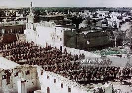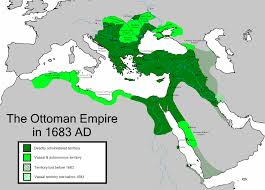
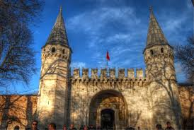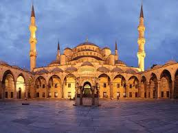
DESCRIPTION
The Ottoman Empire was founded by Osman I. As sultan Mehmed II
conquered Constantinople (today named Istanbul) in 1453, the state grew into
a mighty empire. The Empire reached its apex under Suleiman the Magnificent
in the 16th century when it stretched from the Persian Gulf in the east to
Hungary in the northwest; and from Egypt in the south to the Caucasus in the
north. The empire came to an end in the aftermath of its defeat by the Allies
in World War I. The empire was dismantled by the Allies after the war ended
in 1918.
Rise of the Ottoman Empire (1299–1453)
With the demise of the Seljuk Sultanate of Rum (c. 1300), Anatolia was
divided into a patchwork of independent states, the so-called Anatolian
Beyliks. By 1300, a weakened Byzantine Empire had lost most of its Anatolian
provinces to these Turkish principalities. One of the beyliks was led by
Osman I (d. 1323/4), from which the name Ottoman is derived, son of Ertuğrul,
around Eskişehir in western Anatolia. In the foundation myth expressed in
the story known as "Osman's Dream", the young Osman was inspired to conquest
by a prescient vision of empire (according to his dream, the empire is a big
tree whose roots spread through three continents and whose branches cover the
sky).[1] According to his dream the tree, which was Osman's Empire, issued
four rivers from its roots, the Tigris, the Euphrates, the Nile and the
Danube.[1] Additionally, the tree shaded four mountain ranges, the Caucasus,
the Taurus, the Atlas and the Balkan ranges.[1] During his reign as Sultan,
Osman I extended the frontiers of Turkish settlement toward the edge of the
Byzantine Empire.
During this period, a formal Ottoman government was created whose
institutions would change drastically over the life of the empire.
In the century after the death of Osman I, Ottoman rule began to extend
over the Eastern Mediterranean and the Balkans. Osman's son, Orhan, captured
the city of Bursa in 1326 and made it the new capital of the Ottoman state.
The fall of Bursa meant the loss of Byzantine control over Northwestern
Anatolia. The important city of Thessaloniki was captured from the Venetians
in 1387. The Ottoman victory at Kosovo in 1389 effectively marked the end of
Serbian power in the region, paving the way for Ottoman expansion into
Europe. The Battle of Nicopolis in 1396, widely regarded as the last
large-scale crusade of the Middle Ages, failed to stop the advance of the
victorious Ottoman Turks. With the extension of Turkish dominion into the
Balkans, the strategic conquest of Constantinople became a crucial objective.
The Empire controlled nearly all former Byzantine lands surrounding the city,
but the Byzantines were temporarily relieved when Timur invaded Anatolia in
the Battle of Ankara in 1402. He took Sultan Bayezid I as a prisoner.
The capture of Bayezid I threw the Turks into disorder. The state fell into a
civil war that lasted from 1402 to 1413, as Bayezid's sons fought over
succession. It ended when Mehmed I emerged as the sultan and restored Ottoman
power, bringing an end to the Interregnum.
for further: Rise_of_the_Ottoman_Empire
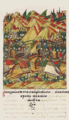 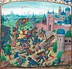
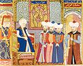 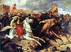
Gape due to the Ottoman Empire Interregnum period
List of sultans of the Ottoman Empire
| List of sultans of Ottoman Empire |
| S.no |
ALL GENRATIONS |
| NAME |
Year |
Pictures |
| 01 |
sultan osman |
(1299-1323) |
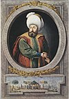 |
| 02 |
sultan orhan |
(1323-1362) |
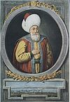 |
| 03 |
sultan murad 1 |
(1362-1389) |
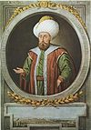 |
| 04 |
sultan bayezid 1 |
(1389-1402) |
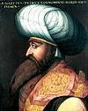 |
| 05 |
sultan mehmood 1 |
(1413-1421) |
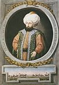 |
| 06 |
sultan mehmood 1 |
(1413-1421) |
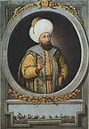 |
| 07 |
sultan mehmood 1 |
(1413-1421) |
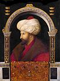 |
| 08 |
sultan mehmood 1 |
(1413-1421) |
 |
| 09 |
sultan mehmood 1 |
(1413-1421) |
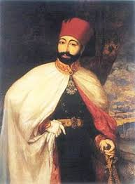 |
| 10 |
sultan mehmood 1 |
(1413-1421) |
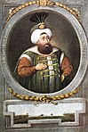 |
| 11 |
sultan mehmood 1 |
(1413-1421) |
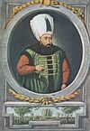 |
| 12 |
sultan mehmood 1 |
(1413-1421) |
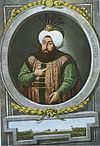 |
| 13 |
sultan mehmood 1 |
(1413-1421) |
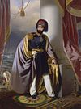 |
| 14 |
sultan mehmood 1 |
(1413-1421) |
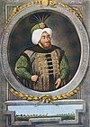 |
| 15 |
sultan mehmood 1 |
(1413-1421) |
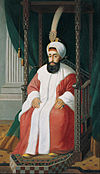 |
for further: List of sultans of the Ottoman Empire
Classical Age (1453–1550)
The Ottoman conquest of Constantinople in 1453 by Mehmed II cemented
the status of the Empire as the preeminent power in southeastern Europe and
the eastern Mediterranean. After taking Constantinople, Mehmed met with the
Orthodox patriarch, Gennadios and worked out an arrangement in which the
Orthodox Church, in exchange for being able to maintain its autonomy and
land, accepted Ottoman authority. Because of bad relations between the
latter Byzantine Empire and the states of western Europe as epitomized by
Loukas Notaras's famous remark "Better the Sultan's turban than the Cardinal's
Hat", the majority of the Orthodox population accepted Ottoman rule as
preferable to Venetian rule.
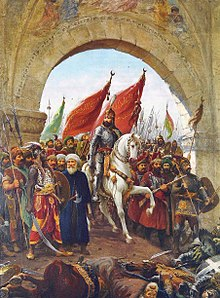 
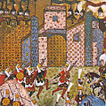 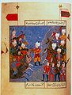
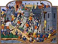 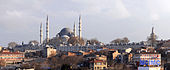
Upon making Constantinople (present-day Istanbul) the new capital
of the Ottoman Empire in 1453, Mehmed II assumed the title of Kayser-i Rûm
(literally Caesar Romanus, i.e. Roman Emperor.) In order to consolidate this
claim, he would launch a campaign to conquer Rome, the western capital of
the former Roman Empire. To this aim he spent many years securing positions
on the Adriatic Sea, such as in Albania Veneta, and then continued with the
Ottoman invasion of Otranto and Apulia on 28 July 1480. The Turks stayed
in Otranto and its surrounding areas for nearly a year, but after Mehmed
II's death on 3 May 1481, plans for penetrating deeper into the Italian
peninsula with fresh new reinforcements were given up on and cancelled and
the remaining Ottoman troops sailed back to the east of the Adriatic Sea.
Decline and modernization (1828–1908)
During the Tanzimat period (from Arabic: تنظيم tanẓīm, meaning "organisation") (1839–76),
the government's series of constitutional reforms led to a fairly modern conscripted army,
banking system reforms, the decriminalisation of homosexuality, the replacement of religious
law with secular law[49] and guilds with modern factories. In 1856, the Hatt-ı Hümayun promised
equality for all Ottoman citizens regardless of their ethnicity and religious confession; which
thus widened the scope of the 1839 Hatt-ı Şerif of Gülhane.
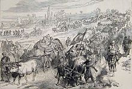 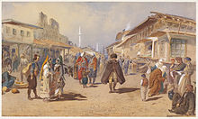
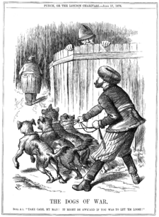 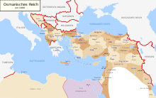
Overall, the Tanzimat reforms had far-reaching effects. Those educated in the
schools established during the Tanzimat period included Mustafa Kemal
Atatürk and other progressive leaders and thinkers of the Republic of
Turkey and of many other former Ottoman states in the Balkans, the Middle
East and North Africa. These reforms included[50] guarantees to ensure the
Ottoman subjects perfect security for their lives, honour and property; the
introduction of the first Ottoman paper banknotes (1840) and opening of the
first post offices (1840); the reorganisation of the finance system according
to the French model (1840); the reorganisation of the Civil and Criminal
Code according to the French model (1840); the establishment of the Meclis-i
Maarif-i Umumiye (1841) which was the prototype of the First Ottoman
Parliament (1876); the reorganisation of the army and a regular method of
recruiting, levying the army and fixing the duration of military service
(1843–44); the adoption of an Ottoman national anthem and Ottoman national
flag (1844); the first nationwide Ottoman census in 1844 (only male citizens
were counted); the first national identity cards (officially named the
Mecidiye identity papers, or informally kafa kağıdı (head paper) documents,
1844); the institution of a Council of Public Instruction (1845) and the
Ministry of Education (Mekatib-i Umumiye Nezareti, 1847, which later became
the Maarif Nezareti, 1857); the abolition of slavery and slave trade
(1847); the establishment of the first modern universities (darülfünun, 1848),
academies (1848) and teacher schools (darülmuallimin, 1848); establishment
of the Ministry of Healthcare (Tıbbiye Nezareti, 1850); the Commerce and
Trade Code (1850); establishment of the Academy of Sciences
(Encümen-i Daniş, 1851); establishment of the Şirket-i Hayriye which
operated the first steam-powered commuter ferries (1851); the first European
style courts (Meclis-i Ahkam-ı Adliye, 1853) and supreme judiciary council
(Meclis-i Ali-yi Tanzimat, 1853); establishment of the modern Municipality
of Istanbul (Şehremaneti, 1854) and the City Planning Council
(İntizam-ı Şehir Komisyonu, 1855); the abolition of the capitation (Jizya)
tax on non-Muslims, with a regular method of establishing and collecting
taxes (1856); non-Muslims were allowed to become soldiers (1856); various
provisions for the better administration of the public service and
advancement of commerce; the establishment of the first telegraph networks
(1847–1855) and railways (1856); the replacement of guilds with factories;
the establishment of the Ottoman Central Bank (originally established as the
Bank-ı Osmanî in 1856, and later reorganised as the Bank-ı Osmanî-i Şahane
in 1863)[51] and the Ottoman Stock Exchange (Dersaadet Tahvilat Borsası,
established in 1866);[52] the Land Code (Arazi Kanunnamesi, 1857); permission
for private sector publishers and printing firms with the Serbesti-i Kürşad
Nizamnamesi (1857); establishment of the School of Economical and Political
Sciences (Mekteb-i Mülkiye, 1859); the Press and Journalism Regulation Code
(Matbuat Nizamnamesi, 1864); among others.
ALSO SEE
- Territorial evolution of the Ottoman Empire
- Timeline of the Ottoman Empire
- Ottoman decline thesis
- Historiography of the fall of the Ottoman Empire
- Ottoman dynasty Chronology of Sultans
- Turkish War of Independence
- Defeat and dissolution of the Ottoman Empire
Further reading
main article:Bibliography of the Ottoman Empire
Volume 2: Suraiya N. Faroqhi and Kate Fleet eds., "The Ottoman Empire as a World Power, 1453–1603." Cambridge University Press, 2012.
Volume 3: Suraiya N. Faroqhi ed., "The Later Ottoman Empire, 1603–1839." Cambridge University Pres, 2006.
Volume 4: Reşat Kasaba ed., "Turkey in the Modern World." Cambridge University Press, 2008.
Finkel, Caroline (2005). Osman's Dream: The Story of the Ottoman Empire, 1300-1923. Basic Books. ISBN 978-0-465-02396-7.
Hathaway, Jane (2008). The Arab Lands under Ottoman Rule, 1516-1800. Pearson Education Ltd. ISBN 978-0-582-41899-8.
Imber, Colin (2009). The Ottoman Empire, 1300-1650: The Structure of Power (2 ed.). New York: Palgrave Macmillan. ISBN 978-0-230-57451-9.
İnalcık, Halil; Donald Quataert, eds. (1994). An Economic and Social History of the Ottoman Empire, 1300-1914. Cambridge University Press. ISBN 0-521-57456-0. Two volumes.
McCarthy, Justin. The Ottoman Turks: An Introductory History to 1923. 1997 Questia.com, online edition.
Quataert, Donald. The Ottoman Empire, 1700–1922. 2005. ISBN 0-521-54782-2.
The Early Ottomans
- Kafadar, Cemal (1995). Between Two Worlds: The Construction of the Ottoman State. University of California Press. ISBN 978-0-520-20600-7.
- Lindner, Rudi P. (1983). Nomads and Ottomans in Medieval Anatolia. Bloomington: Indiana University Press. ISBN 0-933070-12-8.
- Lowry, Heath (2003). The Nature of the Early Ottoman State. Albany: SUNY Press. ISBN 0-7914-5636-6.
The Classical Age
- nalcık; Cemal Kafadar, Halil, eds. (1993). Süleyman the Second [i.e. the First] and His Time. Istanbul: The Isis Press. ISBN 975-428-052-5.
- Şahin, Kaya (2013). Empire and Power in the reign of Süleyman: Narrating the Sixteenth-Century Ottoman World. Cambridge University Press. ISBN 978-1-107-03442-6.
Military
- Ágoston, Gábor (2005). Guns for the Sultan: Military Power and the Weapons Industry in the Ottoman Empire. Cambridge: Cambridge University Press. ISBN 978-0521843133.
- Aksan, Virginia (2007). Ottoman Wars, 1700-1860: An Empire Besieged. Pearson Education Limited. ISBN 978-0-582-30807-7.
- Rhoads, Murphey (1999). Ottoman Warfare, 1500-1700. Rutgers University Press. ISBN 1-85728-389-9.
link on this topics:OVER ALL LINK
Written by MUHAMMAD MOIZ
Visit us at:https://mail.google.com/mail/u/0/#inbox
https:https://en.wikipedia.org/wiki/History_of_the_Ottoman_Empire
Box 70322, karachi
pakistan